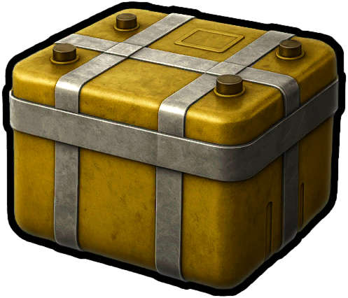

Materiales
Objetos · MaterialesProducto de Fábrica Legendario
Legendary Factory Product

Legendary Factory Product / MaterialesCómo obtenerlo
Cómo obtenerloBotínSe obtiene como botín
Descripción del objeto
Una extraña caja de metal de excepcional rareza, sellada herméticamente. La gente dice que hay un dispositivo especial en la fábrica que puede abrirla.